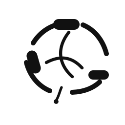

GENERATION INPUT (0)
选中的胶囊将停靠在这里
Generate will auto-pick if none are selected.
Current Runtime
Preview status

Source Box · Current Runtime · artifacts
Bind a source folder, then clean it into reusable capsules.
不是复制，是消化后再织。
Choose a source folder to clean into capsules.
All local. Nothing leaves your machine.